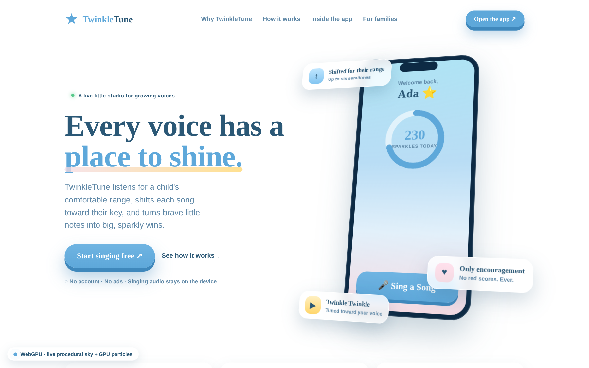
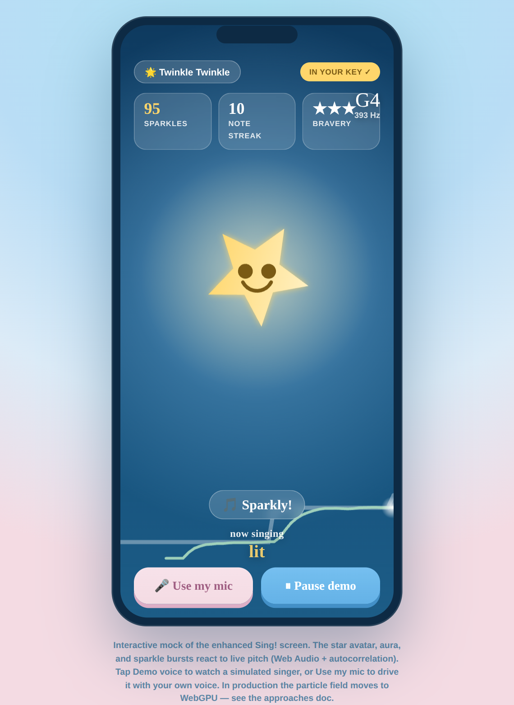

Interactive mocks exploring how bleeding-edge browser APIs — WebGPU, the Web Audio pitch pipeline, GPU-composited 3D transforms — could make the marketing page and the singing experience feel alive, without ever compromising the calm, kid-first, privacy-first product. Every page degrades gracefully all the way down to a static, reduced-motion baseline.

The hero background becomes a procedural aurora sky painted every frame by a WebGPU fragment shader, with hundreds of GPU-instanced sparkle particles and a pointer-driven “light of attention.” The product phone sits on a 3D-tilting stage. Canvas2D fallback included.
Open the hero mock ↗
The singing screen reacts to live pitch: the star avatar grows and glows, sparkle particles burst on-note, and a scrolling pitch ribbon shows the melody vs. the child’s voice. Runs on the real mic (Web Audio + autocorrelation) or a self-playing demo voice.
Open the Sing! mock ↗Read the full strategy in docs/webgpu-3d-experience.md — approaches, progressive-enhancement tiers, performance budgets, accessibility, and a rollout plan.
The hero mock lights up its GPU path in Chrome / Edge 113+ and Safari 18+ / Firefox with
WebGPU enabled. Everywhere else it automatically falls back to an animated Canvas2D sky — check
the little badge in the corner to see which renderer is live. The Sing! mock needs microphone
permission for live pitch; the Demo voice button works with no mic at all.
Reduced-motion preferences are always honoured.